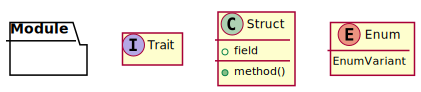
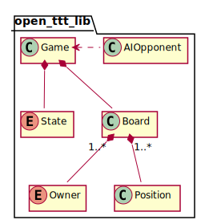
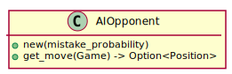

Ounce of Rust Project Manual¶
1. Introduction¶
1.1. Purpose of this Manual¶
This is the manual for the Ounce of Rust project. This manual describes in detail the objectives, requirements, and design considerations of the project providing a central location for this information. This is invaluable for understanding the project’s scope, planning the project’s milestones, and creating the project’s deliverables.
Anyone who is involved with this project is encouraged to read this manual and keep a copy handy while they are working on the project.
1.2. Scope of the Project¶
The main deliverable of the Ounce of Rust project is a Rust library that provides common Tic Tac Toe logic that can be used by other Rust applications. While there are existing libraries that provide similar functionality, this project provides an opportunity to gain experience with Rust, its ecosystem, and general software development practices.
1.3. Overview of this Manual¶
There are three main parts to this manual. 1 The Overview chapter provides a general overview of the problems this project is intended to address and how the project addresses these problems. The Requirements chapter specifies the requirements of the project. The Design chapter describes how the project’s deliverables are designed to fulfill the requirements.
Additionally, the Glossary defines terms that are used throughout this manual.
Footnotes
- 1
The structure of this manual is influenced by [Berezin-1999].
2. Overview¶
The overview chapter provides a high level summary of the project.
2.1. Objectives of the Project¶
The Ounce of Rust project intends to accomplish several objectives. This section describes these objectives.
2.1.1. Create Reusable Library to Speed Development of Tic Tac Toe Games¶
The result of this project is a reusable library that provides a core set of functionality that speeds development of future Tic Tac Toe games. Core functionality includes game state management and artificial intelligence algorithms. The user interface for Tic Tac Toe games is outside the objectives of this project.
2.1.2. Make the Library Open Source and Widely Available¶
The resulting library is released under a permissive open source license and made widely available. This includes placing the code on a public repository such as https://github.com/ and in Rust’s package registry, https://crates.io/.
2.1.3. Learn About Rust¶
Rust is a modern statically typed systems programming language that has a focus on safety. Its mix of high level concepts, ability to avoid entire categories of bugs, and focus on correctness has made Rust an increasingly popular language.
Even though Rust is unlikely to replace C and C++ any time soon, Rust’s concepts, such as traits, error handling, and memory management systems are worth learning to help expand ones general programming knowledge. 1
Footnotes
- 1
The Rust official documentation is likely to be helpful for meeting this objective. For details see [Rust-Docs].
2.2. Current System¶
Tic Tac Toe is a game where two players, X and O, take turns placing their mark in a gird. The first player to get three marks in a row, column, or diagonal wins the game. The game can also end in a draw, known as a “cat’s game”. An example of a Tic Tac Toe game is shown in Figure 2.1.

Figure 2.1 An example game of Tic Tac Toe where player X is victorious.¶
2.2.1. Pencil and Paper¶
Traditionally Tic Tac Toe is played by two players using pencil and paper. This is a quick and convenient way to play with a friend. However, this does not allow for single player games. For people stuck on an airplane this can lead to extreme boredom!
2.2.2. Computer Games¶
Tic Tac Toe computer games allow for single player versions of the game. There are many versions of the game created over the years. Figure 2.2 shows a screen shot from one of the classic Tic Tac Toe games.

Figure 2.2 Screen shot of Tic Tac Toe developed by James Richey.¶
These games can be developed as stand alone applications or can be created with the help of supporting libraries.
2.2.3. Supporting Libraries¶
To support the creation of Tic Tac Toe games many libraries have been developed
to provide common functionality. Searching Rust’s package registry,
https://crates.io/, reveals several such libraries including ultimate-ttt,
zero_sum, and minimax.
With the wide variety of libraries available, for both Rust and other languages, there is likely one that meets the needs of Tic Tac Toe application developers. However, due to the Learn About Rust objective, it is worth going through the effort to create another Tic Tac Toe library.
2.3. Proposed System¶
This project creates a Rust library that application developers can use to create Tic Tac Toe games. The library contains common Tic Tac Toe functionality such as game state management and single player support. The library exposes this functionality through a well defined and documented API. The library is open source and is available in Rust’s package registry https://crates.io/.
By using this library, application developers can focus on making flashy graphics or other unique Tic Tac Toe experiences without worrying about the underlying game logic or artificial intelligence algorithms.
2.3.1. Game State and Board Management¶
A common task of Tic Tac Toe games is managing the state of the game. This includes knowing which player takes the next turn, ensuring players cannot mark a previously marked square, and checking for victory conditions.
2.3.2. AI Players¶
The library allows single player Tic Tac Toe games to be created by providing AI players. These players use artificial intelligence algorithms that pick a square to place the AI player’s mark. The application developer has control over how difficult it is win over the AI player.
2.3.3. Available on crates.io¶
The library is available on https://crates.io/, the source code released under a permissive open source license, and the API documentation is hosted on a publicly accessible website.
2.3.4. Deliverables¶
The project deliverables are:
open_ttt_libpackage. 1API documentation. 2
Source code available on a public repository with a tagged release.
Footnotes
- 1
Future projects built around
open_ttt_libmay useopen_tttas part of their package name.- 2
Popular places to host Rust API documentation include https://docs.rs/ and https://pages.github.com/.
2.4. Interactions with Other Systems¶
The Tic Tac Toe library is intended to be used in other user facing applications. This includes, but is not limited to, stand alone graphical applications, command line applications, or even as a mini-game in a larger video game. The diagram in Figure 2.3 shows how the library is used by other systems.
![[TTT GUI] --> [open_ttt_lib]
[TTT CLI] --> [open_ttt_lib]
[TTT Mini Game] --> [open_ttt_lib]](_images/plantuml-878cef824c7daa6b80eadf97bb4f0c0ade1bb633.svg)
Figure 2.3 Diagram showing how the library is used by other applications.¶
The other applications link directly to open_ttt_lib. The library does not
provide any ways of remote access, e.g. via a network interface, and it does not
save any state the computer’s persistent storage.
2.5. User Roles and Responsibilities¶
This section describes the users of the Tic Tac Toe library.
2.5.1. Rust Application Developer¶
The Rust application developer uses the library to create awesome Tic Tac Toe games.
Responsibilities
Connect the library to a Tic Tac Toe user interface.
Read the library’s documentation to determine how to use the library.
Debug the application when it does not run as expected.
2.5.2. Tic Tac Toe Player¶
The Tic Tac Toe player is an indirect user of the library. They use the application created by the Rust application developer to play an exciting game of Tic Tac Toe.
Responsibilities
Challenge a friend to a game of Tic Tac Toe.
Attempt to win against the computer.
3. Requirements¶
This chapter describes the detailed requirements of the Tic Tac Toe library. This includes the rules for playing Tic Tac Toe and user stories describing how the library is used.
3.1. Rules of Tic Tac Toe¶
The Tic Tac Toe library provides functionality for managing the game and ensuring players only make valid moves. This requires the library’s logic to know the rules of Tic Tac Toe. The rules for Tic Tac Toe are as follows:
Play occurs on a board composed of a 3 x 3 grid of squares. The board starts empty with no marks.
The first player places their mark in one of the grid’s squares. Traditionally, the mark is the letter X.
The second player places their mark in one of the grid’s empty squares. A square that already contains a mark cannot be updated or altered. Traditionally, the second player uses the letter O as their mark.
Turns alternate between the players until the game is over.
The first player to get three of their marks in a line wins the game. That is: they have three marks in a row, column, or diagonally. Examples of winning games are shown in Figure 3.1.

Figure 3.1 Examples of winning Tic Tac Toe games showing player X winning by getting three marks a row, diagonal, and column. The red line shows the squares that contributed to the win. Notice that it is possible to get multiple sets of three marks in a row.¶
The game ends in a draw, known as a cat’s game, if no more empty squares remain and a player has failed to get three marks in a line. Examples of cat’s games are shown in Figure 3.2.

Figure 3.2 Examples of Tic Tac Toe games ending in a cat’s game. No player managed to get three marks in a line.¶
3.2. User Stories¶
User stories are informal descriptions of the software’s features. These stories are written from the perspective of the users roles described in User Roles and Responsibilities. The general format is:
As a <user> I want <goal/desire> so that <benefit>.
This section contains the user stories identified for this project.
3.2.1. Game State Management¶
Acceptance Criteria
The library exposes APIs for getting the current state and updating the state of the game. This includes functionality for checking the victory condition and determining the winner of the game, if any.
Notes
The design details of the APIs are outside the scope of this requirements chapter.
3.2.2. Know Squares that Contributed to Player’s Victory¶
Acceptance Criteria
When a player has won the game there is a way to obtain the board’s squares that contributed to the victory.
If the player won by getting multiple sets of squares as shown in Figure 3.1 then all square that contributed to the win are available.
3.2.3. Stable Library API¶
Acceptance Criteria
The library uses semantic versioning to clearly communicate when there are API changes. 1
There are integration tests that help library developers detect if the library’s API changes.
3.2.4. AI Player¶
Acceptance Criteria
The library provides an AI player that Rust application developers can incorporate into their applications.
3.2.5. AI Difficulty Settings¶
Acceptance Criteria
The difficulty for AI players can be configured by the Rust application developer.
Notes
The difficulty can be thought of as a probability of how likely the AI will make a mistake.
3.2.6. Players Take Turns Having the First Move¶
Acceptance Criteria
The game logic ensures the starting player alternates between games.
Notes
The player who takes the first move has more wining possibilities than the second player. 2
3.2.7. Maximum AI Update Time¶
Acceptance Criteria
There is a benchmark that measures the worst case time the AI blocks while picking a square.
How to run the benchmark is documented so developers can quickly evaluate this library to see if it meets their needs.
Notes
Frame times can vary greatly depending on platform and application. For example, an update time of one second might be just fine for a casual Tic Tac Toe game. However, a Tick Tac Toe mini-game in a modern FPS is expected to take just a fraction of the 1/144 second frame time. Therefore, providing the tools to allow the Rust application developer to see if this library meets their needs is sufficient to fulfill this requirement.
3.2.8. Getting Started Example¶
Acceptance Criteria
There is a runnable example of using the library.
The example is in a prominent location such as library’s documentation home page.
3.2.9. Detailed Library Documentation¶
Acceptance Criteria
All public modules and their members are documented using Rust’s documentation comments.
The documentation contains the typical sections such as Panics and Errors.
The documentation is accessible from the internet, such as being hosted on https://docs.rs.
3.2.10. Idiomatic Rust APIs¶
Acceptance Criteria
The Rust API Guidelines are consulted when designing the library’s API. 3
An experienced Rust programmer code reviews and signs off on the library’s API.
Notes
API design can be subjective. However, providing an idiomatic Rust API is important to fulfilling the Learn About Rust objective. Therefore, obtaining the opinions of an experienced Rust programmer helps ensure the resulting design is reasonable and idiomatic.
3.2.11. Cross Platform Support¶
Acceptance Criteria
The library is tested and verified on two different platforms such as Windows 10 and Linux.
Notes
The use of platform specific code is minimized, however, the number of platforms the library is tested on may be limited due to resource constraints.
3.2.12. Available on crates.io¶
Acceptance Criteria
The library is hosted on crates.io.
The library can be obtained by simply specifying it as a dependency in a package’s
Cargo.toml.
3.2.13. Source Available on GitHub¶
Acceptance Criteria
The library’s source code is hosted on a public GitHub repository.
The library’s tags match the releases on crates.io.
3.2.14. Permissive License¶
Acceptance Criteria
The library is released under a permissive open source license. The MIT license fulfills this requirement.
Footnotes
- 1
See https://semver.org/ for details on semantic versioning.
- 2
The player with the first move has about double the number of winning possibilities. For details see Wikipedia’s Tic-tac-toe page.
- 3
See the [Rust-API-Guidelines] for details.
4. Design¶
This chapter provides design details for the Tic Tac Toe library. This includes user facing areas such as the library’s API and internal algorithms.
4.1. Public API¶
This section describes the public API of the library. The provided types and functions are used by other applications to create Tic Tac Toe games. The legend shown in Figure 4.1 is used for the type diagrams in this section.

Figure 4.1 Legend used for the type diagrams in this section.¶
An overview of the major public types is shown in Figure 4.2.

Figure 4.2 Major public modules, structures, and other types. Note: the module contains additional supporting types that are not shown here.¶
The library contains a single public module that holds the public types. The naming conventions used in this library follow those described in the Rust API Guidelines 1 per the Idiomatic Rust APIs user story.
Each of the major and supporting types are described below.
4.1.1. Game Management¶
Game management is handled by the Game structure. This structure is one of the central types provided by the library. It contains the state machine logic, holds the underlying game board, and enforces the rules of Tic Tac Toe. Figure 4.3 shows the Game structure and other types related to management of Tic Tac Toe games.
![hide empty fields
hide empty methods
class Game {
+new()
+board() -> Board
+state() -> State
+free_positions() -> FreePositions
+can_move(Position) -> bool
+do_move(Position) -> Result<State, InvalidMoveError>
+start_next_game() -> State
}
enum State {
PlayerXMove
PlayerOMove
PlayerXWin[HashSet<Position>]
PlayerOWin[HashSet<Position>]
CatsGame
+is_game_over() -> bool
}
class FreePositions << Iterator >> {
+Item: Position
+next() -> Option<Item>
}
class InvalidMoveError << Error >> {
}
Game *-- Board
Game *-- State
FreePositions --[hidden] InvalidMoveError](_images/plantuml-e0bff4a04ca4db57cc17a507407b8e9ac4001cce.svg)
Figure 4.3 The Game structure contains a State and a Board.¶
A state machine is used determine which player has the next move or when the game is over. The state diagram is shown in Figure 4.4.
![hide empty description
[*] --> PlayerXMove
[*] --> PlayerOMove
PlayerXMove --> PlayerOMove
PlayerXMove --> PlayerXWin
PlayerXMove --> CatsGame
PlayerOMove --> PlayerXMove
PlayerOMove --> PlayerOWin
PlayerOMove --> CatsGame](_images/plantuml-54833c3598e19d85d75d20dd988336c5557b179e.svg)
Figure 4.4 State diagram of a Tic Tac Toe game.¶
When a new game starts either player X or player O takes the first turn. The players alternate making their moves until one of the end game conditions is encountered. The player that did not have the first turn last game takes the first turn next game.
4.1.1.1. Struct Game¶
Members of the Game structure are as follows:
- new()
Creates a new Tic Tac Toe game structure. Note: use
start_next_game()for playing consecutive games to ensure each player gets to start the game.- board()
Gets the board associated with the game.
- state()
Gets the current state of the game.
- free_positions()
Gets an iterator over the free positions that do not have an owner and thus can be provided to
do_move(). When the game is over there are no free positions.- can_move()
Indicates if the square at the indicated position can be marked as owned. That is, if
can_move()returnstruefor a given position thendo_move()is guaranteed to be successful.- do_move()
Marks the indicated square as being owned by the current player. The state of the game is updated as a side effect of
do_move()and the new state of the game is returned. An error is returned if the position is already owned or if the game is over.- start_next_game()
Starts the next game by resetting the state machine ensuring the player who went second last game goes first next game. This can be called at any time even if the current game is not over. The new state of the game is returned.
Trait Implementations
Clone 2
Related Requirements
4.1.1.2. Enum Sate¶
The game state enumeration contains a variant for each possible game state described in Figure 4.4 along with some additional helper methods.
- PlayerXMove
Player X’s turn to mark a free position.
- PlayerOMove
Player O’s turn to mark a free position.
- PlayerXWin[HashSet<position>]
Player X has won the game. The set of positions that contributed to the win are provided as the enum value.
- PlayerOWin[HashSet<position>]
Player O has won the game. The set of positions that contributed to the win are provided as the enum value.
- CatsGame
The game has ended in a draw where there are no winners.
- is_game_over()
Indicates if the state represents one of the game over states. That is, if either player has won or it is a cat’s game then
trueis returned; otherwise,falseis returned.
The set of positions provided to PlayerXWin and PlayerOWin contain all
the positions that contributed to the victory. Usually, there will be three items
in this set representing a row, column, or diagonal. However, there are some
situations as Figure 3.1 where more than three squares
can contribute to a victory.
Trait Implementations
Clone
Debug
Eq
Related Requirements
4.1.1.3. Struct Free Positions¶
An iterator over free positions that do not have an owner. 3
- next()
Gets the next free position in the board, or None once all the free positions have been returned.
Trait Implementations
Iterator
4.1.1.4. Struct Invalid Move Error¶
Used to indicate moving to the indicated position is invalid. This could be due to the position being owned or the game being over.
Trait Implementations
Error
4.1.2. Board Data¶
The board structure models a Tic Tac Toe game board. It maps the individual positions to owners of the position. It provides functions to access and iterate over each position. The board and square structures along with supporting types are shown in Figure 4.5.

Figure 4.5 The Board structure and supporting types.¶
4.1.2.1. Struct Board¶
Data structure representing the Tic Tac Toe board. Provides multiple ways to access individual squares.
- new()
Constructs a new board based on the given size. Panics if the size is less than one row and one column.
- size()
Gets the size of board, that is the number of rows and columns.
- get()
Gets the owner of the provided position. None is returned if requested position is outside the size of the board.
- get_mut()
Gets a mutable reference ot the owner at the indicated position. This allows the owner of the position to be changed. None is returned if requested position is outside the size of the board.
- iter()
Gets an iterator that iterates over all the squares in the board.
The board structure also implements the Display trait. This provides a formatted output of the board and is suitable for use in simple console applications or debugging purposes. An example of the boards display is shown in Listing 4.1.
+---+---+---+
| X | O | O |
+---+---+---+
| O | X | |
+---+---+---+
| X | | X |
+---+---+---+
Trait Implementations
Display
Clone
4.1.2.2. Struct Iter¶
Implements the iterator trait for iterating over all the positions and owner pairs of the board.
- next()
Gets a tuple containing the next position and owner of that position. None is returned if the end of the board has been reached.
4.1.2.3. Struct Size¶
The size structure represents the size of the board in number of rows and columns.
- rows
The number of rows in the board.
- columns
The number of column in the board.
Trait Implementations
Debug
Copy
Clone
From<(usize, usize)>
Eq
Hash
4.1.2.4. Struct Position¶
The position structure represents a specific board position denoted by row and column.
- row
The row associated with the position.
- column
The column associated with the position.
Trait Implementations
Debug
Copy
Clone
From<(usize, usize)>
Eq
Hash
4.1.2.5. Enum Owner¶
The owner enumeration indicates which player owns a position, if any.
- PlayerX
Player X owns the position.
- PlayerO
Player O owns the position.
- None
No player owns the position.
Trait Implementations
Default
Debug
Copy
Clone
Eq
Hash
4.1.3. AI Opponent¶
The AI opponent structure represents a computer controlled AI player. The AI opponent structure is shown in Figure 4.6.

Figure 4.6 AI Opponent structure.¶
See Artificial Intelligence Algorithms for details on how the AI selects a position.
Member Details
- new()
Constructs a new AI opponent. The mistake probability indicates how likely the AI will fail to consider various situations. A value of 0.0 makes the AI play a perfect game. A value of 1.0 causes the AI to always pick a random position. Values less than 0.0 are set to 0.0 and values greater than 1.0 are set to 1.0.
- get_move()
Gets the position the AI opponent wishes to move based on the provided game. None is returned if the game is over. The AI opponent never tries to select an invalid position, that is a position that is not free.
Trait Implementations
Debug
Related Requirements
Footnotes
- 1
See the [Rust-API-Guidelines] for details.
- 2
Rust’s clone and copy traits both serve to duplicate an object but each goes about duplication in a different manner. Copy performs an operation similar to
memcpywhere it just copies the bits of the object. Alternately, Clone explicitly duplicates the object giving the programmer control over what parts are cloned. For details see the discussion in Trait std::clone::Clone.- 3
Rust’s standard library documentation states “Iterators are heavily used in idiomatic Rust code, so it’s worth becoming familiar with them.” For details see [Rust-Crate-std].
4.2. Documentation¶
The Tic Tac Toe library provides API documentation to help developers use the functionality provided by the library. This section describes how the documentation is put together and published.
4.2.1. Documentation Comments¶
Rust supports storing the library’s documentation along side the source code using documentation comments. 1 Each public item provided by the library has corresponding documentation that describes why the item should be used.
Common sections include examples, panics, and errors. In particular, Rust encourages every public type to have a corresponding example. The example for the library’s top level module shows a getting started example that is a simple yet complete Tic Tac Toe game that uses the APIs provided by the library. Additionally, the example code is exercised as part of the library’s tests which help developers detect if a public API has changed.
The Continuous Integration system is configured to ensure all public items are documented. Any public item that is not documented causes a build error to be reported.
Related Requirements
4.2.2. Change Log¶
The library’s source code repository includes a CHANGELOG.md file that describes
user visible changes to the library. For each release a new entry is added to
the change log that describes changes users might care about. 2
The change log also mentions how the library follows semantic versioning. 3
Related Requirements
4.2.3. Hosting¶
The packages’s Cargo.toml uses the default documentation value which means
when the package is uploaded to crates.io, https://docs.rs automatically builds
and hosts the library’s documentation.
The library’s source code repository README.md file contains a link to this
documentation so developers can review the documentation without needing to
download and build the documentation themselves.
Related Requirements
Footnotes
- 1
See the Making Useful Documentation Comments section in the Rust Book which is part of [Rust-Docs]. Additionally, there is a Documentation section in the [Rust-API-Guidelines].
- 2
See https://keepachangelog.com/ for the format of the
CHANGELOG.mdfile and additional details / motivation for keeping a change log.- 3
Rust RFC 1105 API Evolution describes semantic versioning as understood by Rust.
4.3. Distribution¶
This section describes how the Tic Tac Toe library is shared with others.
4.3.1. MIT License¶
The library’s code is released under the MIT license. 1 The MIT license is simple and allows for use with open source, commercial, or private projects.
The library’s source code repository contains a LICENSE.txt file that includes
the text of the MIT license. Additionally, the README.md file mentions the
this license.
Related Requirements
4.3.2. Publishing to crates.io¶
Crates.io is the Rust community’s package registry. Uploading the Tic Tac Toe package to cargo.io allows others to easily obtain the library using the Rust package manager, Cargo.
See Publishing on crates.io
for a step by step guide on how to publish a package. This includes a list of mandatory
metadata that Cargo.toml must contain and how to upload the package.
The library’s source code repository README.md file contains a link to the
crates.io for the library.
Related Requirements
4.3.3. GitHub Repository¶
The library’s source code is available on GitHub so others can clone and modify
the code as they wish. The repository is named after the library. Additionally,
the repository value in the packages’s Cargo.toml file points to this
repository.
GitHub also takes care of the library’s bug tracker.
Related Requirements
Footnotes
- 1
For details on the MIT license see Choose an open source license - MIT License.
4.4. Artificial Intelligence Algorithms¶
The AI algorithms are responsible for picking a square to place the AI player’s mark. 1 It does this by doing a depth first search for all possible game outcomes based on the current state of the game board. An example is shown in Figure 4.7.

Figure 4.7 Example dept first search algorithm looking for possible Tic Tac Toe game outcomes. The AI player is playing as X and the opponent is playing as O. The possible outcomes of selecting a particular square are marked with W for win, L for loss, and C for cat’s game.¶
The algorithm selects a free position then traverses the tree looking for one of the end game conditions: win, loss, or cat’s game. Once the end of the game is found, the result is propagated up the tree. The algorithm assumes the opponent will play a perfect game. That is, if a specific position leads for both a win for the opponent (a loss for the AI player) and a cat’s game, the algorithm marks that position as a loss.
Once all possibilities have been searched, the algorithm picks the position that lead to the best outcome. Winning positions are picked over cat’s games, and cat’s games are picked over losses. Additionally, if there are multiple positions with the same outcome, one is picked at random to ensure the game appears more natural to human players. 2
The depth search algorithm can see to the end of the game, thus it cannot be beat. The best possible outcome is a cat’s game. Therefore, to give human players a chance to win, the algorithm sometimes fails to consider one of the outcomes. The probability of making a mistake is configurable.
4.4.1. AI Logic Details¶
There are two main parts to the AI’s logic. A high level part examines the state of the game and picks the best move and a low level part that evaluates the outcome of picking a specific position. The best way to examine this logic is to look at some pseudo code.
The pseudo code in Listing 4.2 examines the overall state of the game and returns the best position for the AI to place its mark.
def ai_move(game, mistake_probability):
# Determine which player the AI is playing as.
ai_player = get_ai_player(game.state())
# For each free square, evaluate the consequences of using
# that square. The outcome for each position and the position
# is recorded.
outcomes = []
for position in game.free_positions():
outcomes = evaluate_position(
position, game, ai_player, mistake_probability)
outcomes.push((outcome, position))
# Return the best position based on the outcomes.
return best_position(outcomes)
There are several notable items in this pseudo code. The get_ai_player()
function indicates which player the AI is playing as, X or O, based on the
current state of the game. 3 It panics if the game is over. The
resulting variant is passed to the lower level evaluate_game() function.
The best_position() function takes the collection of outcome and position
tuples and picks a position with the best outcome. The ordering of outcomes from
best to worst are: Win, CatsGame, Unknown, Loss. A cats game is
considered better than unknown as the AI would rather have the game end in a draw than
risk a loss. If there are multiple positions with the same outcome, one of the
positions is picked at random.
The evaluate_position() function is responsible for evaluate a specific position.
Listing 4.3 shows the pseudo for this function.
def evaluate_position(position, game, ai_player, mistake_probability):
# Check to see if the AI should make a mistake given the
# mistake probability. If so, don't consider this position.
if should_make_mistake(mistake_probability):
return Outcome.Unknown
# Clone the game so this function can try out the move without
# modifying the original game.
game = game.clone()
game.do_move(position)
# Check to see if the game is over. If so, return the
# outcome of the game from the AI's perspective,
# e.g. win, loss, or cat's game.
if game.state().is_game_over():
return game_state_to_ai_outcome(game.state(), ai_player)
# The game is not over, to evaluate each of the remaining
# free squares. Note: the game automatically takes care of
# switching between player X's and player O's turn.
outcomes = []
for position in game.free_positions():
outcome = evaluate_position(
position, game, ai_player, mistake_probability)
outcomes.push(outcome)
# The AI assumes the other player plays a perfect game,
# so return the worst outcome that was found.
return worst_outcome(outcomes)
The should_make_mistake() function takes the mistake probability and returns
true if the algorithm should skip examining this branch of the tree. The
Unknown outcome is used for parts of the tree that are skipped.
The game_state_to_ai_outcome() function is responsible for converting one of
the game over states into an AI outcome. That is: one of Win, Loss, or
CatsGame. It uses the ai_player to know what player the AI is playing as.
The worst_outcome() function takes the outcomes from all the positions and
returns the worst possible one for the AI player. The ordering of outcomes
returned are: Loss, CatsGame, Win, Unknown. Unknown is returned
only if other information was not obtained about the position.
Note
The ordering of outcomes used by worst_outcome() is different than
different than best_position().
Related Requirements
Footnotes
- 1
The name of the AI player is Robbert, or Bob for short.
- 2
One of the challenges of creating AI for video games is the AI needs to be fun. An AI that picked the same square every time would not be fun! See [Buckland-2004] for a discussion on making game AI fun.
- 3
Rust enums support methods, so
get_ai_player()could actually be implemented asfn new(state: GameState) -> AIPlayerfor theAIPlayerenum.
4.5. Continuous Integration¶
The Tic Tac Toe library uses the Travis CI continuous integration system to build and test every commit on a variety of platforms. 1 This ensures potential problems are found as soon as possible.
The continuous integration system also enforces additional rules such as requiring the project have fully documented public APIs and contain no unused code.
A .travis.yml included in the library’s source code repository tells Travis CI
how to build and test the code. The Travis CI Tutorial
provides a starting point on how to create the .travis.yml file.
The library’s source code repository README.md file contains a link to the
Travis CI build page and includes a badge that indicates if the build is passing
or failing.
Related Requirements
Footnotes
4.6. Benchmarking¶
The library provides a benchmark of the worst case AI update time allowing
users of the library to evaluate if the library fits in with their performance
goals. Cargo contains built in benchmark support: any tests that have the
bench attribute are exercised by running cargo bench. 1
Listing 4.4 shows an example of benchmarking the worst
case AI move.
#[bench]
fn worst_case_ai_move_benchmark(b: &mut Bencher) {
let game = Game::new();
let mistake_probability = 0.0;
b.iter(|| AIMove::new(game, mistake_probability));
}
The worst case update time is for a new game and a zero percent mistake probability. Under this situation the Artificial Intelligence Algorithms have to evaluate the entire problem space.
The library’s source code repository README.md file contains instructions on
how to run the benchmarks.
Related Requirements
Footnotes
- 1
See Benchmark tests for details.
5. Glossary¶
- API
Acronym for application programming interface.
- application programming interface
The interface provided by a library for use by a software application. This is composed by the public functions and types provided by the library.
- Cargo
Cargo is Rust’s build system and package manager.
- Cargo.toml
The configuration file for Cargo. This allows developers to specify their projects metadata and dependencies.
- cat’s game
Term used when a game of Tic Tac Toe ends in a draw where there is no winner.
- crate
Rust’s term for an application binary or library.
- idiomatic coding
Idiomatic coding is using familiar conventions, techniques, and practices of a particular programming language.
- library
A collection of pre-written software functionality that can be used by other applications.
- Ounce of Rust
The code name for the project to make a Rust based Tic Tac Toe library. The etymology comes from how a Tic Tac Toe board is similar to a pound sign ( # ) but this project for making just a part of full game: an ounce is part of a pound.
- package
An organized collection of software components. In Rust, a package is a collection of crates.
- Rust programming language
Rust is a systems programming language with a focus on safety and speed. Website: https://www.rust-lang.org/
- semantic versioning
A set of rules governing how API version numbers are managed and updated with the goal of clearly communicating when incompatible changes, new features, and bug fixes made. For details see https://semver.org/.
6. References¶
- Berezin-1999
Tanya Berezin (1999) Writing a Software Requirements Document. Retrieved from https://eecs.ceas.uc.edu/~cpurdy/sefall10/ReqsDoc.pdf (archived on archive.org)
- Buckland-2004
Mat Buckland (2004) Programming Game AI by Example
- Rust-Docs
Rust Documentation. Available online at https://www.rust-lang.org/learn and on any system with Rust installed by running
rustup doc.- Rust-Crate-std
Crate std - The Rust Standard Library. Retrieved from https://doc.rust-lang.org/std/index.html
- Rust-API-Guidelines
Rust API Guidelines. Retrieved from https://rust-lang-nursery.github.io/api-guidelines/ (source on GitHub)